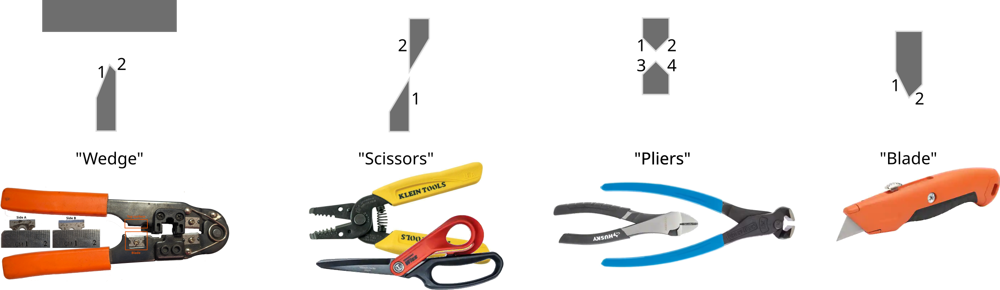

Hidden Multiple Comparisons Increase Forensic Error Rates
2025-03-26
Outline
This research is joint work with Heike Hofmann (Nebraska-Lincoln) and Alicia Carriquiry (Iowa State).
Motivation
At trial, O’Neil testified that tools like the wire cutters found in Genrich’s residence were the only tools that could have been used to make the pipe bombs. “Agent O’Neil opined that the three of Mr. Genrich’s tools were the only tools in the world that could have made certain marks found on pieces from the four bombs,” Judge Gurley wrote in Monday’s opinion.
O’Neil was asked specifically at trial what he meant by the phrase “to the exclusion of any other tool.” “That the individual jaw, the location within that jaw on that particular side, was identified as having cut the wire in question to a degree of certainty to exclude any other tool,” he said, according to court transcripts referenced in Gurley’s decision. O’Neil said this was true of needle-nosed pliers used on the bomb, slip-joint pliers, as well as the wire cutter.
Source (emphasis added)
Examiner Method

Between 2 and 4 cutting surfaces for each tool, \(s \in \{2, 4\}\)
Wires have 1-2 striated surfaces, \(w \in \{1, 2\}\)
Visual Examination
Compare sequential wire cuts or blade cuts to recovered wire
Examiner uses a comparison microscope to see both cuts, aligns striae manually
At least \(N_{ij} = b_i/d_j\) comparisons for each blade surface \(i\) and cut wire surface \(j\)
Manual alignment means we can only estimate the minimum comparisons

Adjacent comparisons are non-overlapping \(\Rightarrow\) “independent”1
Algorithmic Method
Scans -> Cross Section -> Signature (remove gross topology)

Cross-correlation is used to align signature from blade cut surface to signature from wire cut surface.
Image credit: Heike Hofmann
Number of Comparisons
In our example,
Minimum
blade size is \(b=15 mm\)
\(s = 2\) cutting surfaces/blade
wire size is \(d = 2 mm\)
\(w = 1\) wire surfaces
7.5 comparisons per side
15 comparisons total
Maximum
blade size: \(b = 15000\) \(\mu\!\) m
\(s = 2\) cutting surfaces/blade
wire size: \(d = 2000\) \(\mu\!\) m
\(w = 1\) wire surfaces
resolution: \(r=0.645\) \(\mu\!\) m/px
20,156 comparisons per side
40,312 comparisons total
This assumes there’s a single wire and a single possible tool.
Hidden Comparisons
We accept that there’s a false positive error rate with any method
Alignment produces hidden multiple comparisons
The standard wire comparison process produces many more comparisons
Wires from crime scenes may be fragmented or damaged
Personal Motivation

My house has \(\approx\) 982 cm of (easily accessible) blade surface which might be used to cut wires. Not shown: the craft room, the kitchen, and the garden shed. My dad’s shop has \(\approx\) 2243 cm of blade surface. No one in either house is a professional craftsperson.
So How Bad Is the Problem?
For error rate \(e\) and \(n\) comparisons
\[P(\text{no false positive errors}) = 1 - \left(1 - e\right)^n\]
So How Bad Is the Problem?
Pooled estimate: 2%
- probably an underestimate for wires
So How Bad Is the Problem?
If we want to ensure the family-wise false positive rate is under 10%…
![A table showing the family wise false discovery rate for N comparisons using several different estimates of striated comparison error rates. When the FDR is 7%, over 50% of 10-comparison samples would be expected to have a false positive. When the FDR is 2%, over 18% of 10-comparison samples would be expected to have a false positive. Additional columns are provided giving the expected frequency of 100 and 1000 comparisons under different error rates. The final column provides the maximum number of comparisons at the specified error rate which can be performed to keep the family wise false positive error rate under 10%.]()
Conclusions
- Wire cut forensics are problematic
but… this problem shows up in database searches, too!
- IAFIS (Integrated Automated Fingerprint ID System)
- NIBIN (Ballistics Database)
- NDIS (National DNA ID System) and CODIS (Combined DNA ID System)
- PDQ (Paint Data Query)
- FISH (Forensic ID System for Handwriting)
Conclusions
Examiners should report and Defense Attorneys should require
- overall length or area of surfaces generated during the examination process (\(b\))
- total consecutive length/area of recovered evidence (\(d\))
Studies relating length/area of comparison surface to error rates are essential!
- No available black-box error rate for wire cuts
- Studies should be difficult, like casework!
Any database search used at any stage of the process should be disclosed along with
- \(N\) items in the database used for comparison
- Number of results returned as ‘similar’ (top 20? top 5?)
- Protocols for confirmatory assessment
Questions?
This work was partially funded by the Center for Statistics and Applications in Forensic Evidence (CSAFE) through Cooperative Agreements 70NANB15H176 and 70NANB20H019 between NIST and Iowa State University, which includes activities carried out at Carnegie Mellon University, Duke University, University of California Irvine, University of Virginia, West Virginia University, University of Pennsylvania, Swarthmore College and University of Nebraska, Lincoln.


![A table showing the family wise false discovery rate for N comparisons using several different estimates of striated comparison error rates. When the FDR is 7%, over 50% of 10-comparison samples would be expected to have a false positive. When the FDR is 2%, over 18% of 10-comparison samples would be expected to have a false positive. Additional columns are provided giving the expected frequency of 100 and 1000 comparisons under different error rates. The final column provides the maximum number of comparisons at the specified error rate which can be performed to keep the family wise false positive error rate under 10%.](table-fpr-family.png)

{kind=link}